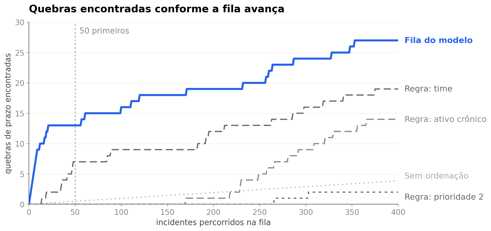

<style>
/* ═══ slide 9 · a fila de risco ══════════════════════════════════════════════
   O slide da regressão logística, e ele responde de uma vez às duas perguntas
   que a banca faz: a fila funciona, e ela ganha do que a operação já usa hoje.

   Quatro versões antes desta. Uma tabela comparando modelo, prioridade e acaso
   ficou cheia. Uma lista com as primeiras linhas da fila de verdade o dono do
   projeto disse que ficou com cara de IA — onze linhas iguais empilhadas é
   justamente o molde que denuncia isso. Uma tira de quadrados por ordenação
   ficou visual, e aí ele reconheceu a curva de ganho como o gráfico que estava
   tentando descrever desde o começo, pedindo a mensagem mais simples junto.

   O gráfico foi refeito para ficar simples de ler: o nome vai escrito na ponta
   de cada linha, sem legenda para casar cor com rótulo, e só o modelo tem cor.
   As quatro alternativas ficam em cinza, porque a única distinção que importa é
   entre o nosso modelo e o que se faria sem modelo nenhum.

   A mensagem em uma frase está no pé, e é a que o apresentador fala: nos 50
   primeiros da fila o modelo acha 13 quebras, e ordenar por prioridade — que é
   o que se faz hoje — não acha nenhuma.

   Regra 10: a fila é uma só e ordena as duas prioridades juntas. O que o P2 tem
   a ver com isso está no pé, com número.

   Regra 11: saber quem quebrou é conhecimento retrospectivo. Legítimo no deck,
   proibido na tela do sistema.

   Figura em dpi 200, de _figuras_fila.py.
   ══════════════════════════════════════════════════════════════════════════ */
.fla .body{padding-top:14px}
.fla .tt{font-size:52px;letter-spacing:-1.9px}

.fla .cena{flex:1;display:flex;align-items:center;justify-content:center;
  margin-top:10px;min-height:0}
.fla .quadro{padding:20px 24px}
.fla .fig{display:block;width:1128px}

/* o fecho: a frase simples, com o número que o apresentador fala */
.fla .fecho{display:flex;align-items:center;gap:32px;margin-top:auto;
  padding-top:20px;border-top:1px solid #DCE4EF}
.fla .fecho .n{display:flex;align-items:baseline;gap:15px;flex-shrink:0}
.fla .fecho .n .v{font-size:60px;font-weight:900;letter-spacing:-2.5px;
  line-height:.86;color:var(--head);font-variant-numeric:tabular-nums}
.fla .fecho .n .k{font-size:17px;line-height:1.34;color:var(--tx);max-width:216px}
.fla .fecho .n .k b{color:var(--head);font-weight:700}
.fla .fecho .obs{font-size:15px;line-height:1.46;color:var(--tx2);
  padding-left:32px;border-left:1px solid #DCE4EF}
.fla .fecho .obs b{color:var(--head);font-weight:700}
</style>

<section class="slide light fla" data-slide="9" data-var="a" data-quem="ana">
  <div class="mesh"></div><div class="grid-bg"></div>
  <div class="hd">
    <div class="bi"><svg viewBox="0 0 28 28" fill="none"><path d="M6 22L12 14L16 17L22 8" stroke="#fff" stroke-width="2.2" stroke-linecap="round" stroke-linejoin="round"/><circle cx="22" cy="8" r="3" stroke="#3B82F6" stroke-width="1.5"/><circle cx="22" cy="8" r="1.2" fill="#3B82F6"/></svg></div>
    <div class="bn">Cronos</div><span class="bt">BANCA FINAL &middot; 15/09/2026</span>
    <div class="tag">Base de avaliação &middot; 5.183 incidentes, 50 quebras</div>
  </div>
  <div class="body">
    <span class="eb"><span class="rv" style="--d:240ms">Regressão logística &middot; contra as regras simples</span></span>
    <h1 class="tt"><span class="mask" style="--d:340ms"><span>A fila de risco</span></span></h1>

    <div class="cena">
      <div class="quadro cartao rv3" style="--d:620ms">
        
      </div>
    </div>

    <div class="fecho rv" style="--d:1240ms">
      <div class="n">
        <span class="v"><span class="ct" data-to="13" data-delay="1440">0</span></span>
        <span class="k">quebras nos <b>50 primeiros</b> incidentes da fila</span>
      </div>
      <p class="obs">Ordenando por prioridade, que é o que se faz hoje, <b>nenhuma</b>. Pela taxa de quebra do time, sete. Pegando incidente ao acaso, meia. Na prioridade 2 a fila também ordena: as nove quebras do período caem na <b>posição mediana 186</b> de 1.248.</p>
    </div>
  </div>
  <div class="ft"></div>
</section>
